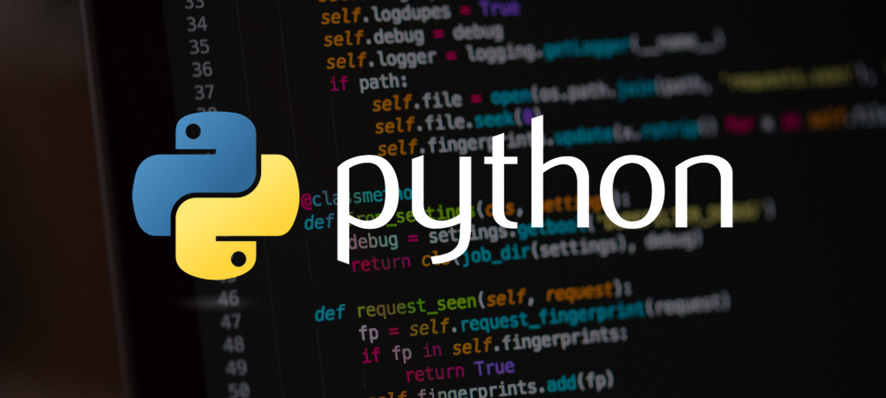
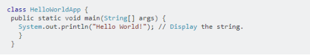
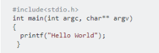
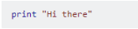

O Python и Pascal
О Python

Python — это высокоуровневый язык программирования общего назначения, который используется в том числе и для разработки веб-приложений. Язык ориентирован на повышение производительности разработчика и читаемости кода.
Правильное русское произношение названия языка программирования — Пайтон, но чаще используется искажённое — Питон.
Python поддерживает несколько парадигм программирования: структурное, объектно-ориентированное, функциональное, императивное и аспектно-ориентированное. В языке присутствет динамическая типизация, автоматическое управление памятью, полная интроспекция, механизм обработки исключений, поддержка многопоточных вычислений и удобные высокоуровневые структуры данных. Программный код на Python организовывается в функции и классы, которые могут объединяться в модули, а они в свою очередь могут быть объединены в пакеты. Python обычно используется как интерпретируемый, но может быть скомпилирован в байт-код Java и в MSIL (в рамках платфоры .NET).
Разработчики языка Python придерживаются определённой философии программирования, называемой «The Zen of Python» («Дзен Питона» или «Дзен Пайтона»)
По производительности интерпретируемый Python похож на все остальные подобные языки, но возможность компиляции в байт-код позволяет добиться большей производительности.
Python был признан языком программирования номер один по индексу
PYPL в 2021 году в основном по двум причинам. Он очень удобен для
новичков, что делает его одним из самых доступных и простых для
изучения языков. В связи с этим приходит вторая причина, ее изучает
весь мир. Из-за большого количества студентов и разработчиков Python
предлагает большинство бесплатных онлайн-руководств. Сообщество
огромно и активно, что позволяет любому найти помощь и руководство
через форумы. Доступность поддержки через форумы укрепляет
уверенность новичка в изучении Python, поскольку он или она не
тратят много времени на поиск наиболее эффективного решения.
Вам точно стоит попробовать Python, если вы никогда не писали код, но хотите получить первую работающую программу как можно быстрее. Самый простой пример — программа, которая выводит на экран заданную фразу. Вот как выглядит ее код на трёх разных языках. Сравните количество и понятность строк кода.
“Java” справляется в 5 строк, используем множество скобок.

“C” работает похоже, хоть строк и немного меньше:

“Python” использует одну понятную строку:

О Pascal
Паскаль все еще существует, и на то есть веские причины. Более того, большинство новых, молодых разработчиков не имеют твердого и правильного представления о Паскале. В частности, что представляет собой язык и почему некоторые разработчики могут его выбрать. Несмотря на то, что Паскаль не очень популярен, он, вероятно, больше всего подходит для создания графического интерфейса и работы с ним. Вы можете эффективно использовать его в IDE, например в Delphi. Delphi упрощает и предоставляет разработчику множество способов управления графическим интерфейсом. Это преимущество Паскаля еще более актуально, учитывая текущую тенденцию в отрасли. В настоящее время пользовательский интерфейс является одним из важнейших факторов, определяющих успех приложения или программного обеспечения. Тем не менее, стоит упомянуть, что даже несмотря на то, что у Паскаля есть инструменты, вам все равно нужно их изучить. Как и с чем-либо, без знаний и практического опыта невозможно достичь хорошего уровня производительности.
Из-за некоторых элементов кода на Pascal, он невероятно быстр и оптимизирован, когда дело доходит до его компиляции. Кроме того, можно легко объединить код Pascal в один файл .exe. Это преимущество Паскаля может показаться не слишком привлекательным для начинающего разработчика, но любой, у кого есть приличный опыт разработки, поймет, насколько ценно это преимущество. В наших школах в основном преподаётся язык программирования Pascal, этот я язык вышел в 2000-х тысячных годах, а в данный момент уже 2022 год и современно ИТ общество входит в эпоху нейронных сетей и близиться день создания искусственного интеллекта, но мы всё ещё в школах изучаем язык программирования устаревший на 22 года. Его достаточно для общих понятий о программировании и школа не готовит профильных специалистов в области ИТ, но не отменяет тот факт что знания в школах должны совершенствоваться и поспевать за эпохой. Возможно в других областях такое совершенствование и идёт, но не в области информатики. И это является серьёзной проблемой. Цель этой работы это создание сайта для обучения языку Python и сравнение Python и Pascal между собой. Хоть и Pascal имеет много преимуществ это не отменяет тот факт что излишне сложный и не обновлялся с момента создания. Он хорошо подходит для баз данных. Python хорошо подходит для нейросетей. У Python несколько другая структура кода, а именно точнее нет разделов объявления переменных констант и меток, но согласно Quartz, средний разработчик Python имеет зарплату в размере 100 000 долларов, и это один из самых востребованных языков, поскольку на него полагаются многие крупные корпорации, например Google. Кроме того, учитывая ранее упомянутое преимущество, а именно простоту изучения, это действительно создает мотивацию к изучению языка и радует тем что легко найти работу. Это главный положительный аргумент для Python.